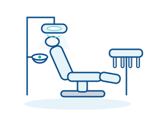

تقنيات طب الأسنان · الجهاز 21 من 28
وحدة علاج الأسنان
محطة العمل المركزية في عيادة الأسنان
تجمع وحدة علاج الأسنان بين كرسي المريض والأدوات وإمداد الماء والهواء والشفط والإضاءة في محطة عمل واحدة، وهي قلب كل غرفة علاج في عيادة الأسنان.

مبدأ العمل
تتكون وحدة العلاج من كرسي مريض قابل للتعديل كهربائيًا، ووحدة الطبيب مع حامل الأدوات، ووحدة المساعد مع نظام الشفط، إضافة إلى وحدة الماء مع حوض البصق وكوب المضمضة. ويتحكم الطبيب عبر دواسة قدم في سرعة دوران الأدوات ووظائفها دون الحاجة إلى استخدام يديه.
تُزوَّد الأدوات – التوربين، والمحرك الدقيق مع القبضة الزاوية، والمحقنة متعددة الوظائف، وجهاز التقليح بالموجات فوق الصوتية – بالهواء المضغوط والماء والكهرباء عبر خراطيم. يصل التوربين الذي يعمل بالهواء المضغوط إلى سرعات دوران عالية جدًا، بينما يعمل المحرك الدقيق الكهربائي بعزم دوران أعلى وسرعة أقل. ويعمل رذاذ من الماء والهواء على تبريد السن أثناء الحفر.
يزيل نظام الشفط اللعاب والماء والرذاذ (الإيروسول) من فم المريض ويصرفها عبر فاصل الملغم إلى المجاري. وتحافظ أنظمة التطهير المدمجة على نظافة خطوط المياه، لأن الماء الراكد قد يكوّن طبقة حيوية (بيوفيلم). كما تحتوي الوحدات الحديثة على مصباح علاج بتقنية LED ولوحات تحكم لمسية مع أوضاع محفوظة للكرسي.
مجالات الاستخدام
- طب الأسنان العام والوقاية
- علاجات الحشوات والتيجان
- علاج لب الأسنان (علاج قناة الجذر)
- تقويم الأسنان وطب أسنان الأطفال
- إجراءات جراحة الفم في العيادة
في لمحة
- فئة المخاطر (MDR)
- عادةً IIa (الوحدة مع الأدوات المُشغَّلة)؛ كرسي المريض وحده: I
- أماكن الاستخدام النموذجية
- عيادات الأسنان، مستشفيات الأسنان، تقويم الأسنان، جراحة الفم والوجه والفكين
- المساحة المطلوبة
- غرفة علاج مع توصيلات للماء والهواء المضغوط والصرف والكهرباء؛ يجب مراعاة مخطط التركيب مسبقًا
- مدة الاستخدام النموذجية
- نحو 10 إلى 15 عامًا مع الصيانة المنتظمة
ما الذي يجب مراعاته عند الشراء؟
- وضّحوا متطلبات التركيب قبل الشراء: يجب أن تكون توصيلات الماء والهواء المضغوط والتفريغ/الشفط والصرف والكهرباء في الأرضية أو الجدار في الموضع الصحيح تمامًا.
- اختاروا تجهيزات الأدوات وفق نطاق العلاجات لديكم: عدد المحركات الدقيقة والتوربينات، وجهاز التقليح بالموجات فوق الصوتية، ومصباح التصليب الضوئي، وعند الحاجة وظيفة محرك علاج الجذور.
- احرصوا على وجود وظائف النظافة مثل برامج الشطف التلقائي وتطهير خطوط المياه والأجزاء القابلة للفك والتطهير الحراري – فهي تسهّل كثيرًا الالتزام بمتطلبات النظافة.
- فاصل الملغم مطلوب قانونيًا في الاتحاد الأوروبي – بما في ذلك ألمانيا – وفي كثير من الدول الأخرى؛ تحقق من اعتماده وفترة صيانته وطرق التخلص من مخلفاته.
- قارنوا عقود الصيانة وزمن استجابة الدعم الفني وتوافر قطع الغيار – فتعطل الوحدة يعني توقف غرفة العلاج بأكملها.
مصطلحات مهمة
- التوربين
- قبضة تعمل بالهواء المضغوط بسرعة دوران عالية جدًا لتحضير الأنسجة الصلبة للسن.
- فاصل الملغم
- وحدة ترشيح في مسار الصرف تحتجز بقايا الملغم المحتوية على الزئبق حتى لا تصل إلى شبكة الصرف الصحي.
- القبضة الزاوية
- ملحق للمحرك الدقيق ينقل الدوران إلى أداة الحفر؛ وتوجد منها أنواع بنسب تسريع أو تخفيض.
هل تخطّطون لشراء جهاز من هذا النوع؟
نقدّم لكم استشارة محايدة تجاه الشركات المصنّعة، ونقارن عروض الأسعار، ونرافق عملية التوريد.